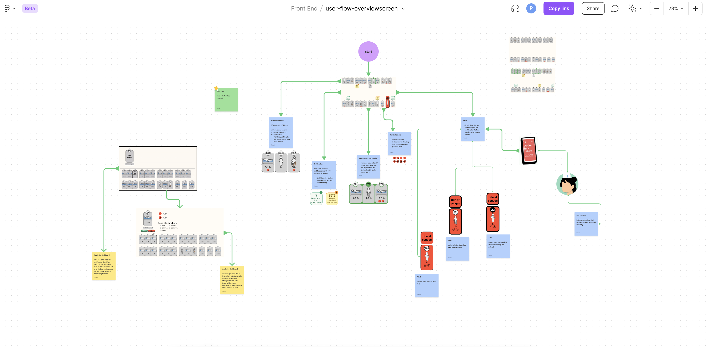
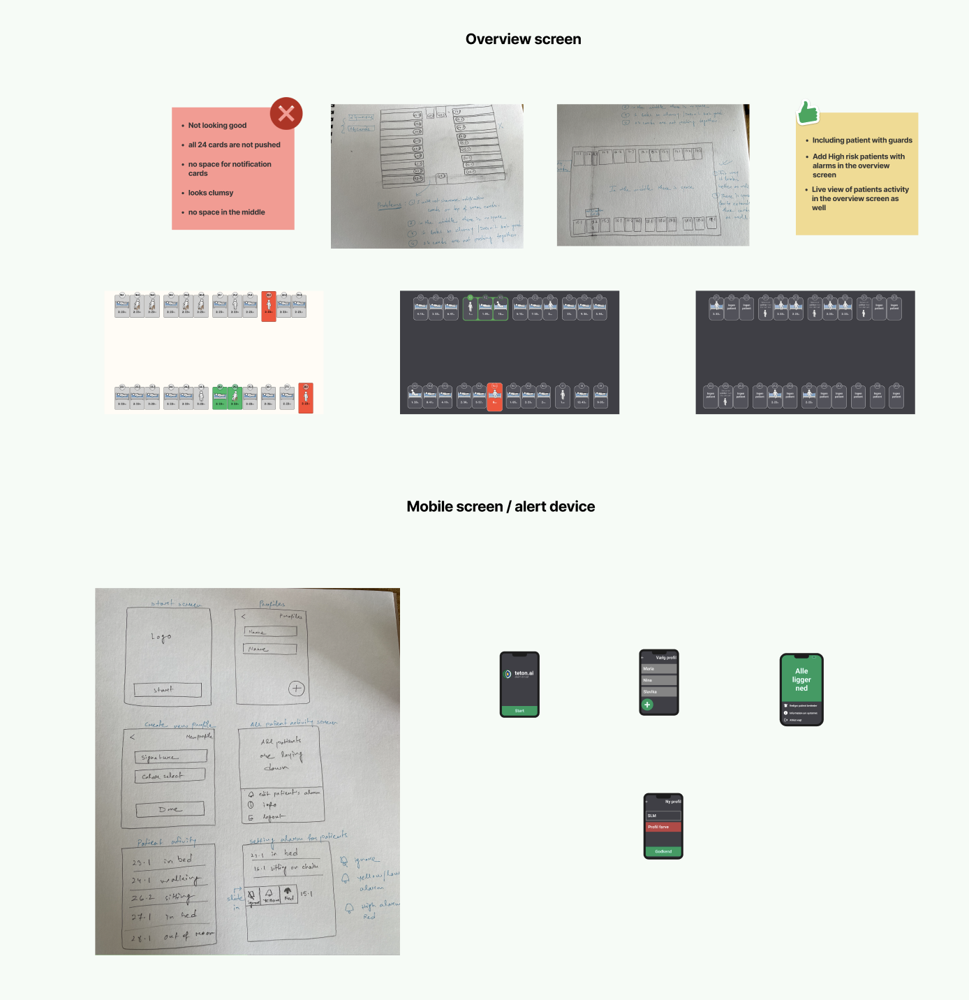

Teton.ai
Patient monitoring platform, to help nurses and medical staffs in the hospital.

Overview
In my contract job (for seven months), I worked as an UI/UX Designer and Frontend Developer at Teton.ai which was a computer vision based patient monitoring startup in Copenhagen. During my tenure, I worked with the interaction designer. I designed, prototyped in Figma. I also designed a brand new mobile app for the nurses and medical staffs. It was created to virtually monitor patients' movements all the time and send alerts in case of critical situations.
Role & Responsibilities
- User Design
- Prototyping
- Visual Design
- Usability Test
- Next JS
My design process
With a focus on UI for this project, the steps I covered in my design process included user stories, proto personas, user flows, sketching, wireframing, style guides, and prototyping.

Empathize
After defining the scope of the app, the next step was creating user stories and a user persona to better understand my users’ needs and goals.


Ideate
Created a user flow diagram to map out these features. This helped to see the onboarding-flow for the overview screen. Also this provided clear connections between components as in how all those screens and small mobile app is related.

Build in Miro
Design
Next, I started sketching low-fidelity wireframes with pen and paper. I moved on to Adobe XD for my mid- and high-fidelity wireframes. where I have create the initial layouts for small-mobile and tv screen.

Style guide
I made a style guide to show and instruct others on the final choices for all visual aspects, including colors, icons, buttons, notification cards and patient models. I have used blender to create patients models.

Mock ups


Final Reflections
- This mock-up is based on the mobile device used by medical staff, from this device they can schedule alarms for each patient. If something happens with the patient they will get alert for that and immediately they can go and take precautions.
- Collecting constructive criticism was another important part of the process. Together alongside a contionous stream of discussions, the lead interaction designer and I designed the whole UI .
Products demostration


Some real life photos
- There are some photos of overview screen from the hospital desk, of how the nurses and medical staff are monitoring patients from their office rooms.
- These small mobile devices are being used as alert devices where they can get alert.